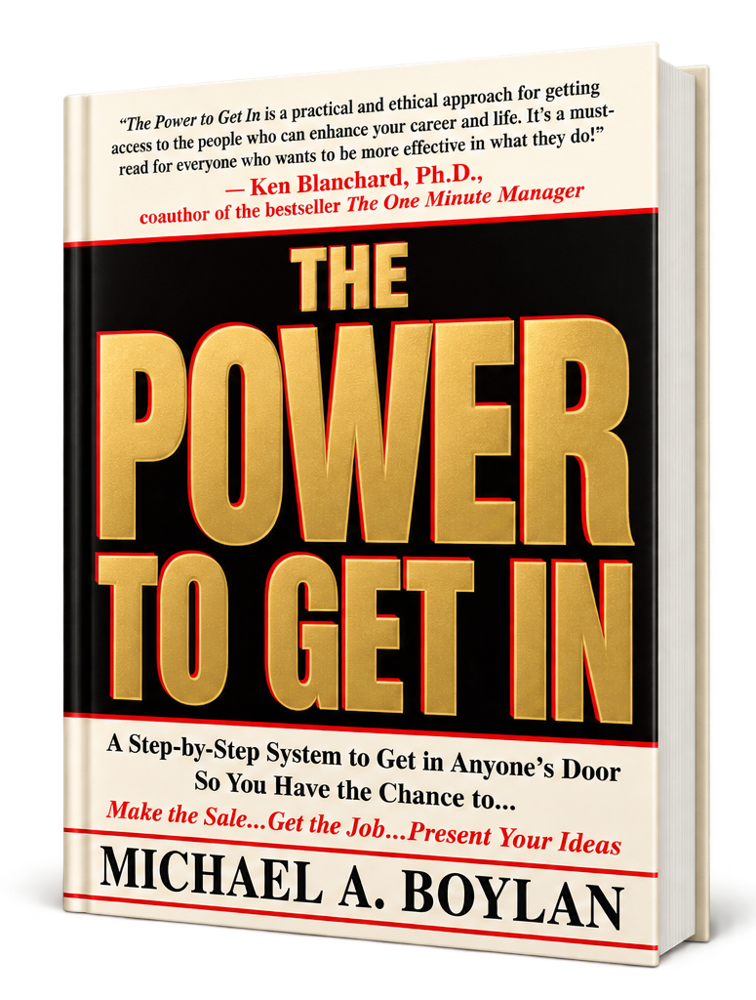

National Bestseller
The Power To Get In
The book introduces The Circle of Leverage System and its approach to gaining access to the right decision-makers.
The methodology has been used within sales, marketing, and business-development environments to improve the effectiveness and frequency of access to senior executives and other critical audiences.
Explore Circle of Leverage Training →